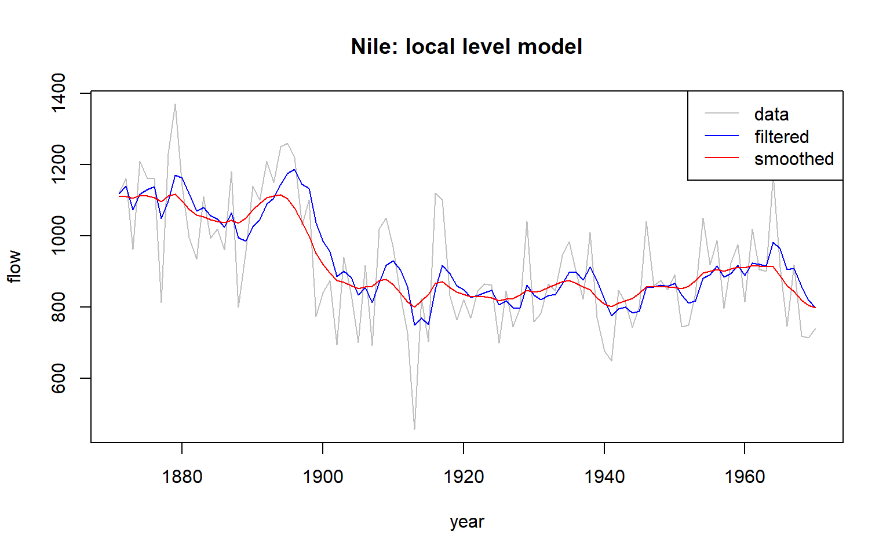
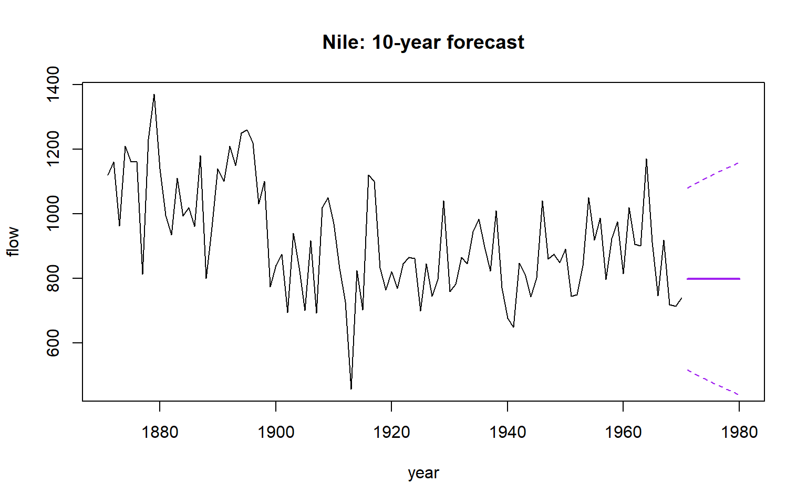
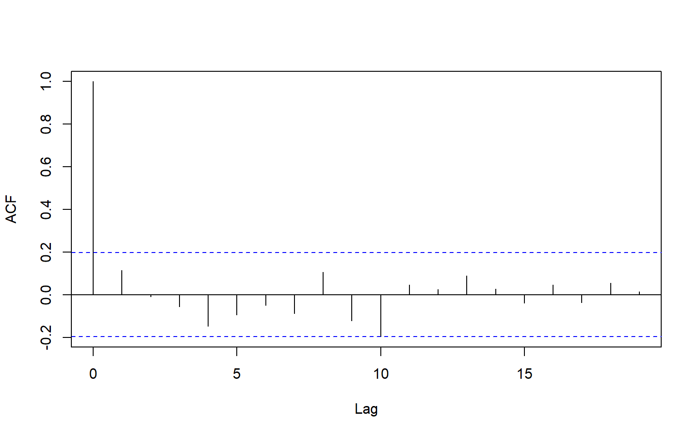
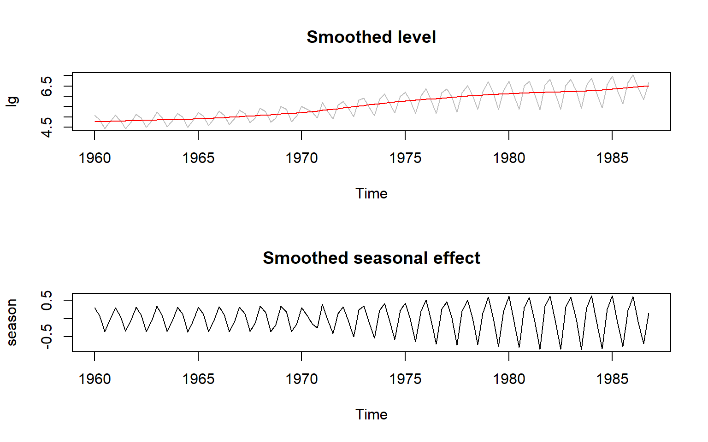

Code
library(dlm)
y <- as.numeric(Nile)
n <- length(y)This section covers Part 2 - State Space models. A state space model splits a time series into a hidden state that changes over time and observations that are a noisy view of that state. I write out the local level model, the linear growth model and the basic structural model, and I show how the Kalman filter updates the state as each observation arrives. I estimate the variances V and W by maximum likelihood with dlm, and I check the filtered and smoothed estimates against the package. I also show how ARIMA can be written in state space form. My own Kalman filter code is in Project 4 (Chapter 12), so this section uses dlm for the fitting.
The key concepts in this section are as follows,
This section starts with a local level model fitted to the Nile flows with dlm. It estimates V and W by maximum likelihood, plots the filtered and smoothed level, checks the standardised residuals, and forecasts ten years ahead with prediction limits. Next, the basic structural model is fitted to UK gas consumption on the log scale, with seasonal effects that are allowed to change over time. The section then writes an AR(2) model in state space form and checks the Kalman filter likelihood against arima().
library(dlm)
y <- as.numeric(Nile)
n <- length(y)build <- function(parm) dlmModPoly(order = 1, dV = exp(parm[1]), dW = exp(parm[2]))
fit_dlm <- dlmMLE(y, parm = c(0, 0), build = build)
fit_dlm$convergence[1] 0exp(fit_dlm$par)[1] 15099.803 1468.432The maximum likelihood fit converged (convergence code 0), giving V = 15099.803 and W = 1468.432 (see chk-ssm-nile). The notes used these values as fixed illustrations, so this is the first time I’ve estimated them from the data.
mod <- build(fit_dlm$par)
filt <- dlmFilter(y, mod)
smooth <- dlmSmooth(filt)plot(1871:1970, y, type = "l", col = "grey", xlab = "year", ylab = "flow", main = "Nile: local level model")
lines(1871:1970, dropFirst(filt$m), col = "blue")
lines(1871:1970, dropFirst(smooth$s), col = "red")
legend("topright", c("data", "filtered", "smoothed"), col = c("grey", "blue", "red"), lty = 1)
fc_dlm <- dlmForecast(filt, nAhead = 10)
fc_se <- sqrt(unlist(fc_dlm$Q))
plot(1871:1970, y, type = "l", xlim = c(1871, 1980), xlab = "year", ylab = "flow", main = "Nile: 10-year forecast")
lines(1971:1980, fc_dlm$f, col = "purple", lwd = 2)
lines(1971:1980, fc_dlm$f - 1.96 * fc_se, col = "purple", lty = 2)
lines(1971:1980, fc_dlm$f + 1.96 * fc_se, col = "purple", lty = 2)
The forecast is flat at 798.3885 for all ten years, because a local level model has no trend. The standard error grows from 143.5261 in the first year to 183.8903 in the tenth, because the level variance is added at each step (see chk-ssm-nile).
res <- residuals(filt)$res
acf(res[-1], main = "")
The autocorrelation of the standardised one-step prediction errors has no significant spikes (Figure 7.3). A Ljung-Box test at lag 10 does not reject independence (X-squared = 13.2, df = 10, p = 0.2127), so the errors look like white noise and the local level model appears to capture the structure in the data.
c(V = exp(fit_dlm$par[1]), W = exp(fit_dlm$par[2]), convergence = fit_dlm$convergence) V W convergence
15099.803 1468.432 0.000 fc_dlm$f [,1]
[1,] 798.3885
[2,] 798.3885
[3,] 798.3885
[4,] 798.3885
[5,] 798.3885
[6,] 798.3885
[7,] 798.3885
[8,] 798.3885
[9,] 798.3885
[10,] 798.3885fc_se [1] 143.5261 148.5536 153.4164 158.1298 162.7067 167.1583 171.4944 175.7236
[9] 179.8533 183.8903Box.test(res[-1], lag = 10, type = "Ljung-Box")
Box-Ljung test
data: res[-1]
X-squared = 13.2, df = 10, p-value = 0.2127lg <- log(UKgas)build_bsm <- function(p) {
dlmModPoly(order = 2, dV = exp(p[1]), dW = c(exp(p[2]), exp(p[3]))) +
dlmModSeas(frequency = 4, dV = 0, dW = c(exp(p[4]), 0, 0))
}
fit_bsm <- dlmMLE(lg, parm = rep(-5, 4), build = build_bsm)
v <- exp(fit_bsm$par)
names(v) <- c("obs", "level", "slope", "season")
signif(v, 3) obs level slope season
1.82e-03 9.86e-11 7.90e-06 3.31e-03 StructTS(lg, type = "BSM")$coef level slope seas epsilon
0.0000000000 0.0000918821 0.0037839289 0.0019500240 The dlm fit gives an observation variance of 1.82e-03, a level variance of 9.86e-11, a slope variance of 7.90e-06 and a seasonal variance of 3.31e-03. The level variance is effectively zero, so most of the movement sits in the seasonal and observation terms. StructTS() also gives a level variance of 0 and a slope variance of 0.0000918821 on the same log scale. Its seasonal and observation variances (0.0037839289 and 0.0019500240) are a little larger than the dlm values (see chk-ssm-gas).
mod_bsm <- build_bsm(fit_bsm$par)
sm_bsm <- dlmSmooth(lg, mod_bsm)
level <- ts(dropFirst(sm_bsm$s[, 1]), start = start(lg), frequency = 4)
season <- ts(dropFirst(sm_bsm$s[, 3]), start = start(lg), frequency = 4)
par(mfrow = c(2, 1))
plot(lg, col = "grey", main = "Smoothed level")
lines(level, col = "red")
plot(season, main = "Smoothed seasonal effect")
par(mfrow = c(1, 1))
fc_bsm <- dlmForecast(dlmFilter(lg, mod_bsm), nAhead = 8)
exp(fc_bsm$f) Qtr1 Qtr2 Qtr3 Qtr4
1987 1295.2303 662.0895 372.2305 870.7191
1988 1429.4530 730.7008 410.8041 960.9503The eight-quarter forecast, back on the original scale, runs from 1295.2303 in the first quarter of 1987 to 960.9503 in the fourth quarter of 1988 (see chk-ssm-gas). The forecast keeps the quarterly pattern, because the seasonal effect is part of the state rather than fixed dummies.
set.seed(1)
x <- arima.sim(list(ar = c(0.5, 0.3)), n = 300)build_ar2 <- function(p) {
dlm(FF = matrix(c(1, 0), 1, 2), V = 0,
GG = matrix(c(p[1], 1, p[2], 0), 2, 2),
W = diag(c(exp(p[3]), 0)),
m0 = c(0, 0), C0 = diag(10, 2))
}
fit_ss <- optim(c(0, 0, 0), function(p) dlmLL(x, build_ar2(p)))
c(phi1 = fit_ss$par[1], phi2 = fit_ss$par[2], sigma2 = exp(fit_ss$par[3])) phi1 phi2 sigma2
0.4330990 0.3599724 0.9331722 arima(x, order = c(2, 0, 0), include.mean = FALSE)
Call:
arima(x = x, order = c(2, 0, 0), include.mean = FALSE)
Coefficients:
ar1 ar2
0.4290 0.3628
s.e. 0.0535 0.0535
sigma^2 estimated as 0.9305: log likelihood = -415.32, aic = 836.63The state space fit gives phi1 = 0.4330990, phi2 = 0.3599724 and sigma2 = 0.9331722. arima() gives 0.4290 and 0.3628 for the two AR coefficients, and sigma^2 = 0.9305. The two methods agree to about the second decimal place, which is what I expected from the same likelihood.
This was a nice section. It felt intuitive, building on exponential smoothing with an underlying state. The struggle was mostly with understanding the maths. The updating after seeing new observations has a similar feel to Bayes, which seems very logical to me.
In ARIMA the model describes the autocorrelation of what I observe. Here the model describes a hidden state that drives what I observe, and the Kalman filter updates my estimate of that state each time a new observation arrives. The part that took me longest was seeing that the one-dimensional case uses the same formulas as the matrix notation on the slides, with the state simply being size one.
Project 4 (Chapter 12) is where most of the difficulty was. My first simulation drew the state twice in each step, so the observations and the state did not match. I only noticed when the plots disagreed. Then I passed rnorm() the variance when it needs the standard deviation, so I had to take square roots. In the filter I first used a random draw in place of the variance \(W\), which gave a negative \(R_t\), and I also used all of \(F_t\) where I needed only the current value. Each mistake was small, but each one gave a plausible-looking result until I checked it.
The estimation step taught me the most. The slides do not show how \(V\) and \(W\) are estimated, so I had to work out for myself that the one-step prediction errors give the likelihood, and why the parameters go on the log scale so that they stay positive. My estimates were \(\hat{V} = 1.5761\) and \(\hat{W} = 1.3909\), against true values of \(V = 2\) and \(W = 1\). The total noise is about right, but some of it has been assigned to the wrong equation. The slides warn that the variances can be hard to tell apart, and I think that is what I saw.
The filter itself did what it should. The filtered state had a mean squared error of 0.88 against the true state, compared with 2.06 for the raw observations, so it tracks the state better than the data do. Forecasts decay towards zero within two or three steps, because the sign-flipping \(G_t\) multiplies the state by about one half each time. The prediction intervals looked too wide at first, and I thought they were useless. Checking coverage changed my mind, as 94% of the one-step 95% intervals contained the observation, so they are honest about how uncertain the state is.
The bit that confused me most was tracking \(V\) and \(W\). I kept having to work out how to rewrite the formulas each time they appeared in later steps, but I now understand what they mean. If \(W\) is large relative to \(V\), the filter follows the data more closely. If the ratio is reversed, the filter is smoother. A filter has access only to the observations up to the current time. Prediction uses all the prior data to forecast each point one step ahead. Smoothing uses the whole series, starting at the end and working backwards.